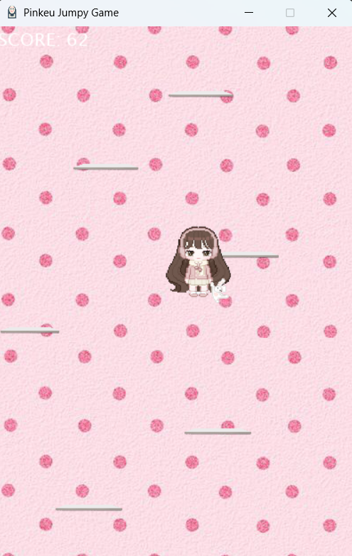
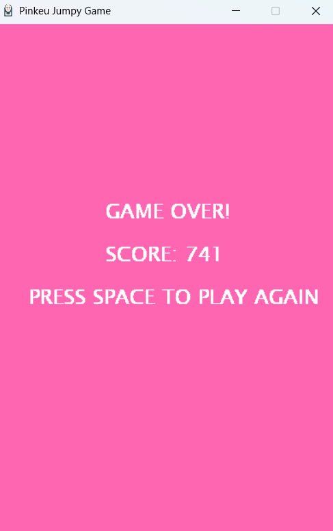

Pinkeu Jumpy Game adalah game 2D berbasis Python yang dibuat menggunakan library Pygame.
Dalam game ini, pemain mengontrol karakter untuk melompat dari satu platform ke platform lainnya agar tidak jatuh ke bawah layar. Salah satu tujuan saya membuat game ini adalah untuk memahami cara kerja game seperti menghitung skor dan penggerakan karakter yang semua dikerjakan melalui kode.
Berikut cara kerja game dan cara memaninkan Pinkeu Jumpy Game:
Cara Kerja Game :


Download Game melalui link dibawah ini